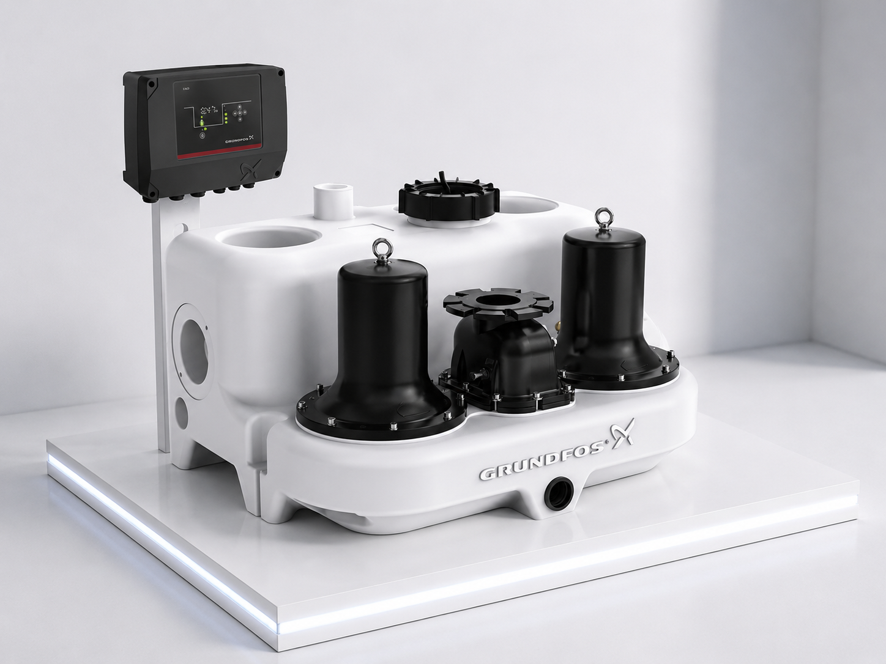

📞 032.347.0815~7
한국그런포스펌프(주) 프리미엄 공식 대리점 | 1995년 설립
✉ hyoilpump@daum.net
회사소개
제품소개
납품실적
Blog
그런포스
문의하기
제품 소개 · Products
건식 오·배수 패키지 펌프
지하 주차장·기계실의 오배수를 자동으로 처리하는 건식 설치형 패키지 시스템. 완전 밀폐 구조로 악취 차단 및 위생적인 배수 환경을 제공합니다.
← 전체 제품으로 돌아가기
Drainage
MD1, MDV
MULTILIFT MD1, MDV는 SE 또는 SL 펌프가 장착된 올인원 리프팅 스테이션으로서 대형 상업용 빌딩의 오폐수를 수집하고 처리하도록 설계되었습니다. 이 제품에는 450 리터의 수조가 있습니다.
p 최대
10 bar
액 온도
0 .. 40 °C
최대 양정
45 m
최대 유량
20 l/s
상세 보기 →

Drainage
MD
MULTILIFT MD는 올인원 이중 펌프 리프팅 스테이션으로서 다가구 주택과 소형 상업용 빌딩의 오폐수를 수집하고 처리할 수 있도록 설계되었습니다. 이 제품에는 130 리터의 수조가 있습니다.
액 온도
0 .. 40 °C
최대 양정
11 m
최대 유량
16 l/s
상세 보기 →